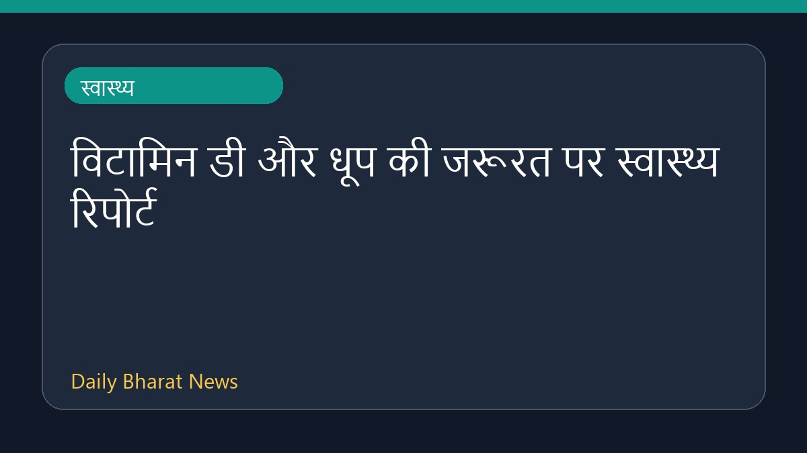

विटामिन डी और धूप की जरूरत पर स्वास्थ्य रिपोर्ट

स्वास्थ्य खबरों के अनुसार, धूप और विटामिन डी की आवश्यकता को लेकर विभिन्न सलाह सामने आई हैं। लोग हर दिन विटामिन डी ले रहे हैं, फिर भी शरीर में इसकी कमी बनी हुई है। इस संबंध में डॉक्टरों ने स्पष्ट किया है कि स्तर क्यों नहीं बढ़ पा रहा है। वहीं, सूरज की रोशनी के संपर्क में आने को लेकर सावधानी बरतने की सलाह दी गई है, लेकिन साथ ही धूप से पूरी तरह दूर न रहने की बात भी कही गई है। इस विषय पर सीमित जानकारी ही उपलब्ध है।
मूल स्रोत: Health News Sources
How much sunshine do we really need? - BBC ↗
How much sunshine do we really need? - BBC ↗